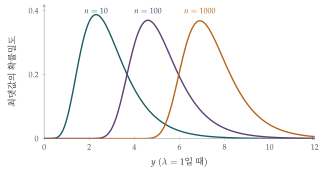

STEP III 2025, 문제 11
다음으로 넘어가기 전에 문제를 먼저 읽어 보자. 이 문제는 OCR에서 내려받을 수 있는 2025년 STEP 문제지 모음(zip 파일)의 STEP III 문제지에 있다: www.ocr.org.uk/Images/750486-2025-past-papers.zip
도입
다음 백 년 동안 일어날 가장 큰 홍수는 얼마나 높을까? 전구 천 개 가운데 가장 오래가는 전구는 얼마나 버틸까? \(n\)명이 뛰는 마라톤에서 가장 빠른 주자는 얼마나 빠를까? 여러 확률적 값 가운데 가장 큰 값이나 가장 작은 값, 곧 극값(extremes)에 관한 질문은 공학, 보험, 기후과학에서 매우 중요하며, 평균과는 전혀 다르게 움직인다.
이 문제에서는 지수분포(exponential distribution)를 따르는 수명 \(n\)개 가운데 가장 큰 값의 분포를 구한다. 그 전형적인 크기는 \(\ln n\)처럼 커진다. 느리지만 한없이 커진다. 그러나 그 퍼짐은 전혀 커지지 않는다. 수명 천 개의 최댓값은 수명 열 개의 최댓값과 대략 같은 정도로 예측 가능하다. 극한에서 그 분포의 모양은 검벨 분포(Gumbel distribution)이며, 이는 정규분포 곡선에 대응하는 극값의 분포이다.
시작하기 전에
\(X_1, \ldots, X_n\) 가운데 가장 큰 값이 \(y\) 이하인 것은 정확히 어떤 일이 일어날 때인가?
\(Y \leq y\)인 것은 정확히 모든 \(X_i \leq y\)일 때이다. 그러면 독립성(independence)에 의해 이것이 곱으로 바뀐다.
차근차근 풀기
단계 1 최댓값의 분포
각 \(X_i\)는 \(y \geq 0\)에서 \(\mathrm{F}(y) = 1 - e^{-\lambda y}\)이고, 독립성에 의해 \[\mathrm{G}(y) = \mathrm{P}(X_1 \leq y, \ldots, X_n \leq y) = \bigl(1 - e^{-\lambda y}\bigr)^n. \qed\]
단계 2 분위수
\(\mathrm{G}(L) = \alpha\)를 \(L\)에 대하여 풀어라. 그다음 \(\mathrm{G}(U) = 1 - \alpha\)를 풀어라.
\(\bigl(1 - e^{-\lambda L}\bigr)^n = \alpha\)에서 \(e^{-\lambda L} = 1 - \alpha^{1/n}\)을 얻으므로 \[L(\alpha) = -\frac1\lambda\ln\bigl(1 - \alpha^{1/n}\bigr), \qquad U(\alpha) = -\frac1\lambda\ln\bigl(1 - (1 - \alpha)^{1/n}\bigr). \qed\]
단계 3 큰 \(n\)
\(\alpha^{1/n} = e^{(\ln\alpha)/n}\)으로 써라. \(n\)이 크면 지수가 작다. \(1 - \alpha^{1/n}\)은 근사적으로 얼마인가?
\(\alpha^{1/n} = e^{(\ln\alpha)/n} \approx 1 + \frac{\ln\alpha}{n}\)이므로 \(1 - \alpha^{1/n} \approx \frac{-\ln\alpha}{n} = \frac{\ln(1/\alpha)}{n}\)이다. 따라서 \[\lambda L(\alpha) \approx -\ln\frac{\ln(1/\alpha)}{n} = \ln n - \ln\Bigl(\ln\frac1\alpha\Bigr). \qed\] 마찬가지로 \(\lambda U(\alpha) \approx \ln n - \ln\bigl(\ln\frac{1}{1 - \alpha}\bigr)\)이다.
단계 4 증가와 퍼짐
중앙값(median)은 \(L(\frac12)\)이고, \(\lambda L(\frac12) \approx \ln n - \ln\ln2 \to \infty\)이다. 그러나 \[\lambda\bigl(U(\alpha) - L(\alpha)\bigr) \approx \ln\Bigl(\ln\frac1\alpha\Bigr) - \ln\Bigl(\ln\frac{1}{1 - \alpha}\Bigr),\] 이고, 여기서 \(\ln n\) 항들은 서로 상쇄되었다. 즉 폭은 \(n\)에 의존하지 않는다.■
단계 5 \(90\%\) 구간
\(\alpha = 0.05\)로 놓아라. \(\ln\frac1\alpha = \ln 20\)과 \(\ln\frac{1}{0.95}\)는 근사적으로 얼마인가?
\(\alpha = 0.05\)일 때 \(\ln20 \approx 3\)이므로 \(\ln\ln\frac1\alpha \approx \ln3\)이다. 또 \(\ln\frac{1}{0.95} = -\ln(1 - 0.05) \approx 0.05 = \frac{1}{20}\)이므로 \(\ln\ln\frac{1}{1 - \alpha} \approx \ln\frac{1}{20} \approx -3\)이다. 따라서 폭은 약 \(\frac1\lambda(\ln3 + 3) \approx \frac{4.1}{\lambda}\)이고, \(Y\)는 확률 \(0.9\)로 폭이 약 \(4\lambda^{-1}\)인 구간 \([L(0.05), U(0.05)]\)에 놓인다.■

돌아보기
최댓값이 \(y\) 이하인 것은 모두가 그럴 때이다. 독립성 덕분에 최댓값의 분포가 거듭제곱이 되었다.
역으로 풀어 분위수 구하기. \(\mathrm{G}(y) = \alpha\)를 풀어 구간 양 끝의 정확한 공식을 얻었다.
근사한 다음 비교하기. \(L\)과 \(U\)의 근사식에 모두 \(\ln n\)이 들어 있었고, 폭에서는 이것이 상쇄되었다.
숨은 수학
검벨 분포
\(\mathrm{P}(\lambda Y - \ln n \leq x) = \bigl(1 - \frac{e^{-x}}{n}\bigr)^n \to \exp(-e^{-x})\)이므로, 평행이동한 최댓값 \(\lambda Y - \ln n\)은 극한에서 분포함수(distribution function)가 \(\exp(-e^{-x})\)인 검벨 분포를 따른다. 그 평균은 오일러(Euler) 상수 \(\gamma \approx 0.577\)이다. 이 분포는 이미 만난 적이 있다. 쿠폰 \(n\)종을 모두 모으는 데 걸리는 시간(9.11 절)은 (거의 독립인) 대기 시간 \(n\)개의 최댓값이며, 그래서 그 값이 약 \(n\ln n + \gamma n\)이고 \(n\) 정도 크기의 검벨 요동을 보이는 것이다.
극값 이론
피셔(Fisher), Tippett, 그네덴코(Gnedenko)의 놀라운 정리(1928–1943)에 따르면, 독립이고 동일한 분포를 따르는 많은 확률변수의 최댓값은 적절히 평행이동하고 축척을 조정하면 극한에서 가능한 모양이 세 가지뿐이다. 검벨 분포(지수분포나 정규분포처럼 꼬리가 가벼운 경우), 프레셰(Fréchet) 분포(코시(Cauchy) 분포처럼 꼬리가 무거운 경우), 바이불(Weibull) 분포(엄격한 상한이 있는 확률변수의 경우)이다. 이는 중심극한정리(central limit theorem)(12.24 절)의 극값판이라 할 수 있다. 공학자들은 이를 이용해 “백 년 만의 파도”에 대비한 홍수 방어 시설과 해상 구조물을 설계하고, 보험사는 재해 보험료를 책정하며, 기후과학자들은 폭염이 어떻게 변하고 있는지를 추정한다.
에밀 율리우스 검벨(Emil Julius Gumbel)은 독일의 통계학자로, 나치에 공공연히 반대하다가 1932년 대학 교수직에서 쫓겨났고 결국 미국으로 망명했다. 그는 1930년대와 1940년대에 극값 이론을 강의 범람에 적용했다. 그의 책 Statistics of Extremes(극값의 통계학, 1958)는 이 분야를 실용적인 도구로 만들었다. 1953년 북해 대홍수 이후 네덜란드를 보호하기 위해 건설된 델타 공사(Delta Works)는 약 \(10\,000\)년에 한 번 일어날 것으로 예상되는 폭풍 해일을 견디도록 극값 통계를 이용해 설계되었다.
사고 기술
독립인 확률변수들의 최댓값에 대해서는 \(\mathrm{P}(\max \leq y) = \prod\mathrm{P}(X_i \leq y)\)이고, 최솟값에 대해서는 \(\mathrm{P}(\min > y) = \prod\mathrm{P}(X_i > y)\)이다.
이 한 가지 아이디어로 가장 가까운 슈퍼마켓(12.19 절), 가장 먼저 오는 버스(12.18 절), 가장 오래가는 전구를 모두 다룰 수 있다. 대학에서는 이것이 순서통계량(order statistics)과 극값 이론의 출발점이 된다.
더 도전하기
최댓값의 기댓값. \(\mathrm{E}(Y) = \frac1\lambda\bigl(1 + \frac12 + \cdots + \frac1n\bigr)\)임을 보여라. (힌트: 무기억성(memorylessness)에 의해, \(n\)개의 수명 가운데 첫 번째 것이 끝난 뒤 남은 \(n - 1\)개는 새로 시작하는 것과 같다.)
최솟값. \(X_1, \ldots, X_n\) 가운데 가장 작은 값이 모수 \(n\lambda\)인 지수분포를 따름을 보여라.
정확한 중앙값. \(Y\)의 정확한 중앙값을 구하고, \(n = 10\)일 때 이를 근삿값 \(\frac1\lambda(\ln n - \ln\ln2)\)와 비교하여라.
균등분포의 최댓값. \(X_1, \ldots, X_n\)이 \([0, 1]\)에서 균등분포(uniform distribution)를 따를 때, 그 최댓값 \(M\)의 분포를 구하고, \(n\)이 클 때 \(n(1 - M)\)이 근사적으로 지수분포를 따름을 보여라. 이는 세 가지 극값 모양 가운데 어느 것인가?
더 읽을거리
Stuart Coles, An Introduction to Statistical Modeling of Extreme Values (Springer). 홍수와 해수면에 관한 실제 자료를 담은 표준 입문서이다.
Emil Julius Gumbel, Statistics of Extremes (Dover). 고전이다.
David Spiegelhalter, The Art of Uncertainty (Pelican). 드문 사건과 그것을 어떻게 생각해야 하는지에 관한 책이다.